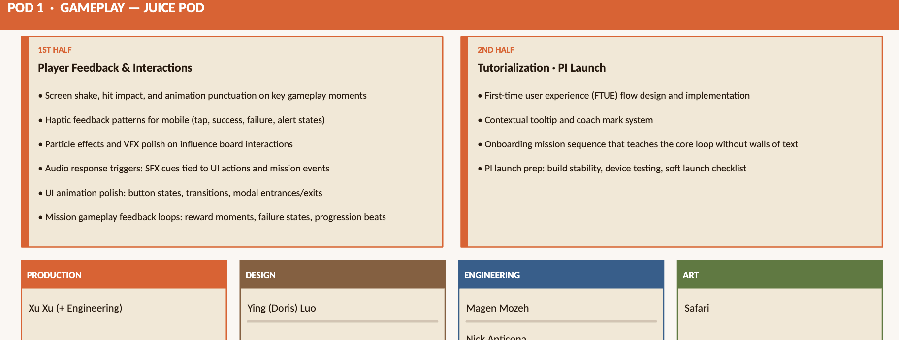
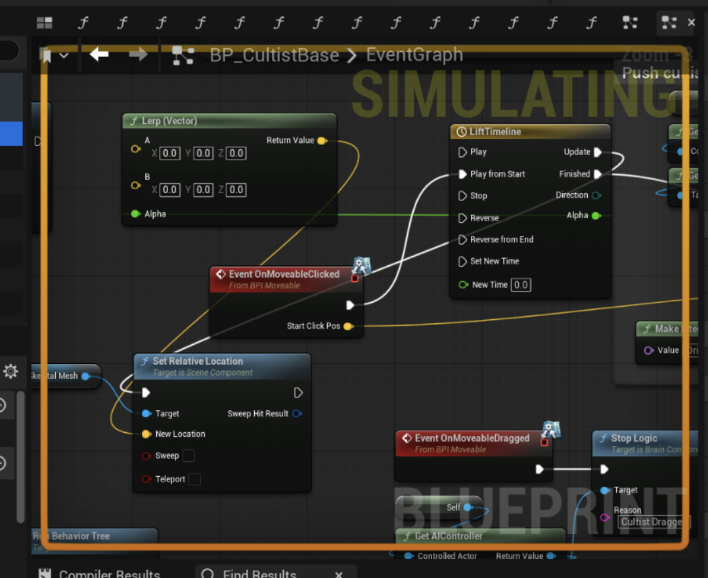
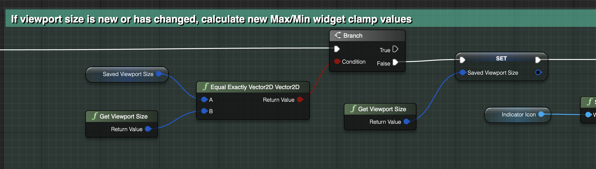

CSCI 508: Games as a Service and Live Operations: Development
CSCI 508 focuses on developing and expanding an existing
Unreal Engine 5 game through gameplay programming, UI,
backend systems, and live operations.

Unit Selection System
Supporting Blueprint

Unit Selection Feedback
Improved visual feedback when players select units
during gameplay.
Selection Scaling:
Enlarged selected units to clearly communicate
which unit the player is interacting with.
Rendering Priority:
Made selected units render in front of nearby
buildings so they remain visible.
Deselection:
Restored the unit's original size and rendering
behavior when it is deselected.
Reusable Behavior:
Applied the interaction consistently across
selectable units.
Off-Screen Attack Indicator
Developed a directional warning system that alerts
players when they are attacked by an enemy outside
their current view while using the bulletin board.
Attack Detection:
Detects attacks coming from enemies outside the
player's current view.
Directional Feedback:
Determines the attacker's position and displays
the indicator in the corresponding direction.
Dynamic Visibility:
Shows the warning when an off-screen attack occurs
and hides it when it is no longer needed.
Animation Integration:
Structured the system to support the final
animated indicator sprite.
Off-Screen Attack Indicator

Purchase & Backend System
IN PROGRESS
Developed backend functionality supporting in-game
purchases and persistent live-game systems.
Purchase Requests:
Connected player purchase interactions to
backend services.
Backend Integration:
Connected Unreal Engine gameplay systems with
services outside of the game client.
Persistent Data:
Supported storing and retrieving player-related
purchase information.